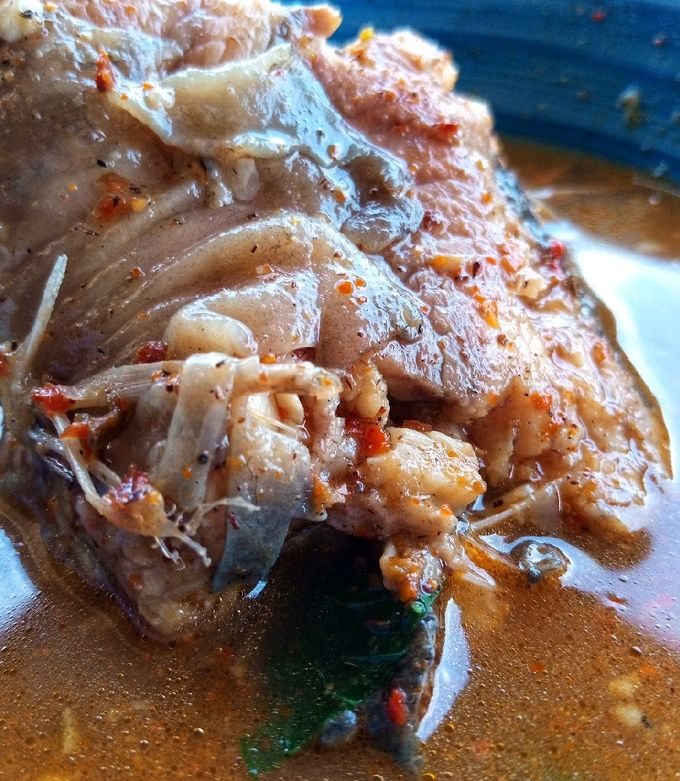

Catfish pepper soup is a light, spicy Nigerian soup that celebrates
the clean, rich flavour of catfish with aromatic “pepper soup” spices,
hot peppers and fresh herbs.
It’s served piping hot with boiled yams, plantain, rice, or by itself
as a restorative dish.
This comforting soup is often enjoyed as a warming meal, especially
during cold weather or festive gatherings.
Cuisine: Nigerian (popular across many regions)

Recipe Information
Preparation time
About 15–20 minutes (includes washing and cutting the fish,
chopping/blending peppers and onions).
Cooking time
About 15–20 minutes (gentle simmer once fish is in the pot).
Number of servings
4 servings (adjust fish quantity up or down for more/fewer
people).
Difficulty level
Beginner — straightforward steps; main care is gentle handling of
the catfish so it doesn’t fall apart.
1 medium onion (half blended or chopped, half sliced for garnish)
2–4 Scotch bonnet / habanero peppers (adjust to heat preference) —
chopped or blended
2 seasoning cubes or 1 tsp bouillon powder (optional)
Salt to taste
Handful scent leaves (scent leaf, basil) or uziza leaves — chopped,
added at the end
1–2 limes (for washing the fish)
Optional: 1 tbsp ground crayfish (if you like a slightly fuller
flavour)
Tools: large pot, blender or mortar, cutting board, knife,
sieve, deep spoon for stirring, serving bowl.
Nutition Information(per serving):
Values are approximate and based on 1 serving out of 4, assuming
minimal oil and no starchy side dish.
Nutrients
Amount
% Daily Value
Calories
~ 180 kcal
9%
Protein
~ 26 g
52%
Fat
~ 6 g
9%
Carbohydrates
~ 5 g
2%
Fiber
~ 2 g
8%
Sodium
~ 800 mg
35%
Potassium
~ 450 mg
10%
Instructions
Wash the catfish with lime (important):
Rinse the fish under cold running water. Cut into steaks if not
already done.
Cut 1–2 limes in half and squeeze the juice over each piece, then
rub the lime over the skin and inside the cavity. The acid helps
remove the slimy coat and reduce strong “fishy” odour. Let the
lime sit 1–2 minutes, then rinse thoroughly under running water.
Pat pieces dry with paper towel. (If the fish is very slimy, you
can add a small pinch of coarse salt while rubbing before
rinsing.)
Prep aromatics and spice:
Blend or finely chop half the onion together with the Scotch
bonnet peppers (for a smoother broth you can blend, for a clearer
soup use chopped peppers). Reserve sliced onion for garnish.
Measure pepper soup spice (or mix your ground spices). If using
crayfish, have it ready.
Build the broth:
In a large pot, pour 5–6 cups of water and bring to a boil. Add
the pepper soup spice, half the blended onion (or whole onion
halves if you prefer), seasoning cubes, and a pinch of salt. Let
the spice simmer for 4–6 minutes so the flavours bloom.
Add the catfish carefully:
Reduce heat to medium-low (gentle simmer). Gently add the catfish
pieces to the broth. Cover and simmer 8–12 minutes — catfish cooks
quickly; avoid vigorous stirring so the fish doesn’t break up.
Check for doneness: flesh should flake easily and be opaque.
Add fresh pepper/onion and finish:
If you reserved blended pepper, you can add it now (or earlier for
a hotter, cloudier soup). Add ground crayfish (if using). Taste
and adjust salt. Add scent leaves or basil in the last 1–2 minutes
of cooking — this preserves their aroma and color.
Serve:
Turn off heat. Serve the hot pepper soup into bowls, garnish with
sliced onions and extra scent leaves. Serve immediately with
boiled yam, plantain, white rice, or eat as a spicy broth.
Quick tips:
Don’t overcook:
Catfish becomes flaky fast — simmer gently.
For a clearer soup: Don’t blend onions/peppers; add whole pepper and
onion pieces or use chopped only.
Heat control: Use fewer Scotch bonnets or remove seeds to reduce
heat.
Frozen fish: Defrost fully and pat dry before the lime wash.
Leftovers: Keep refrigerated up to 48 hours; reheat gently.